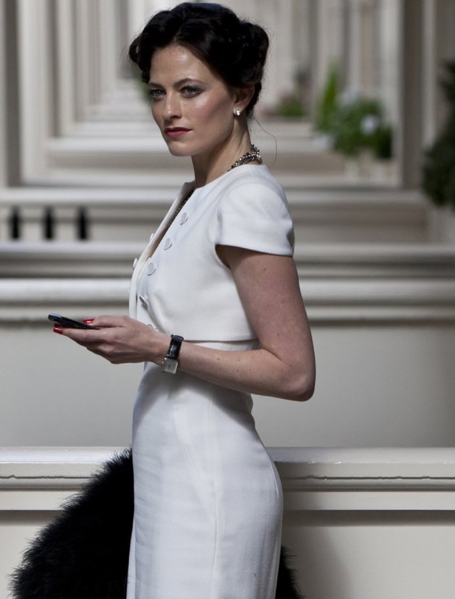
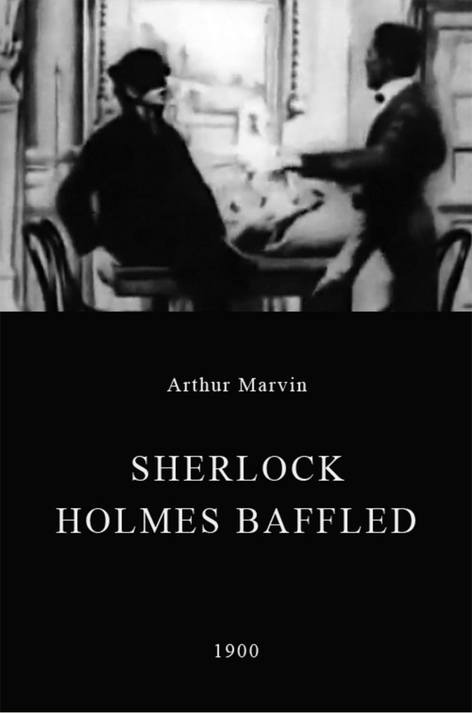
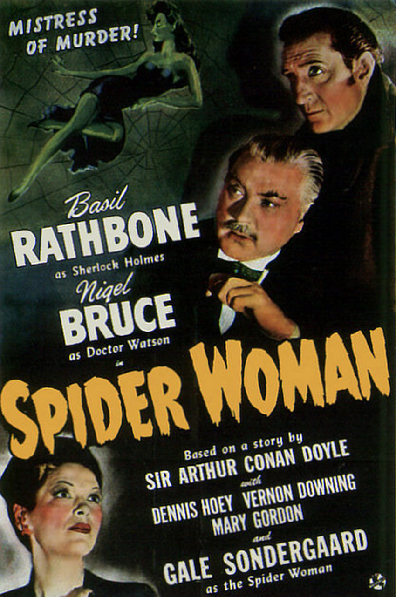
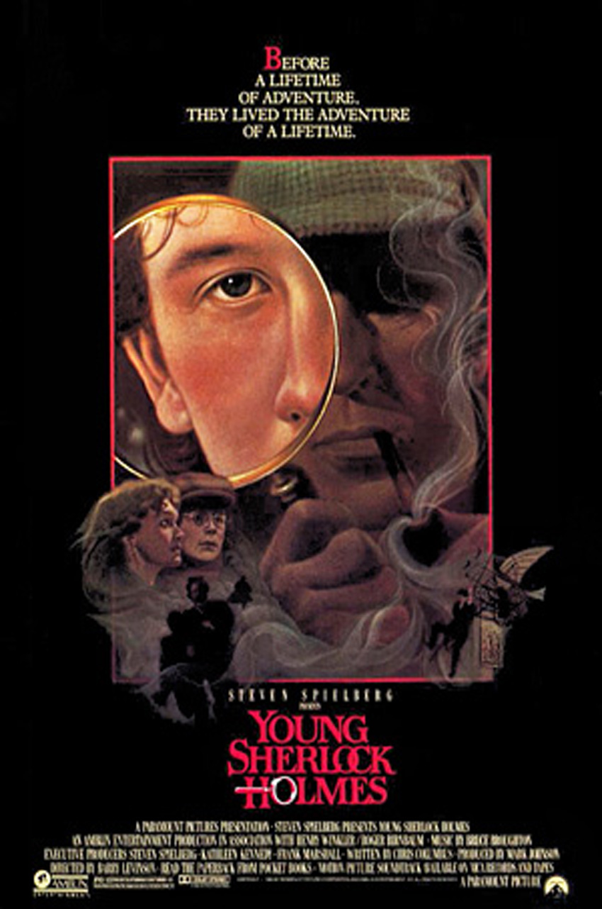
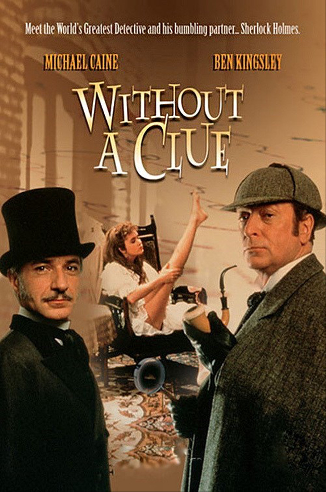
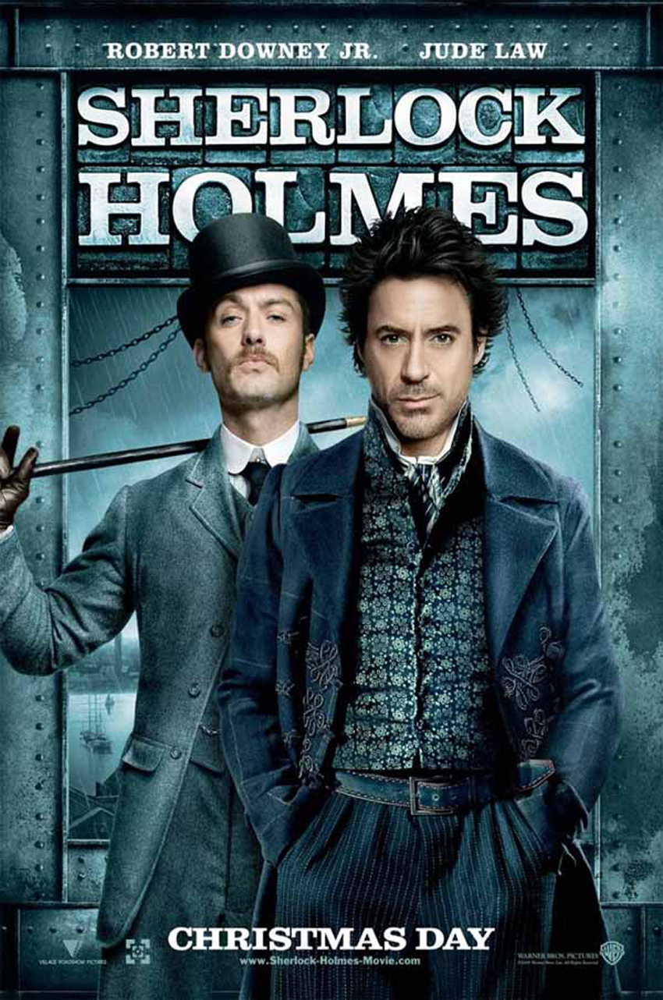
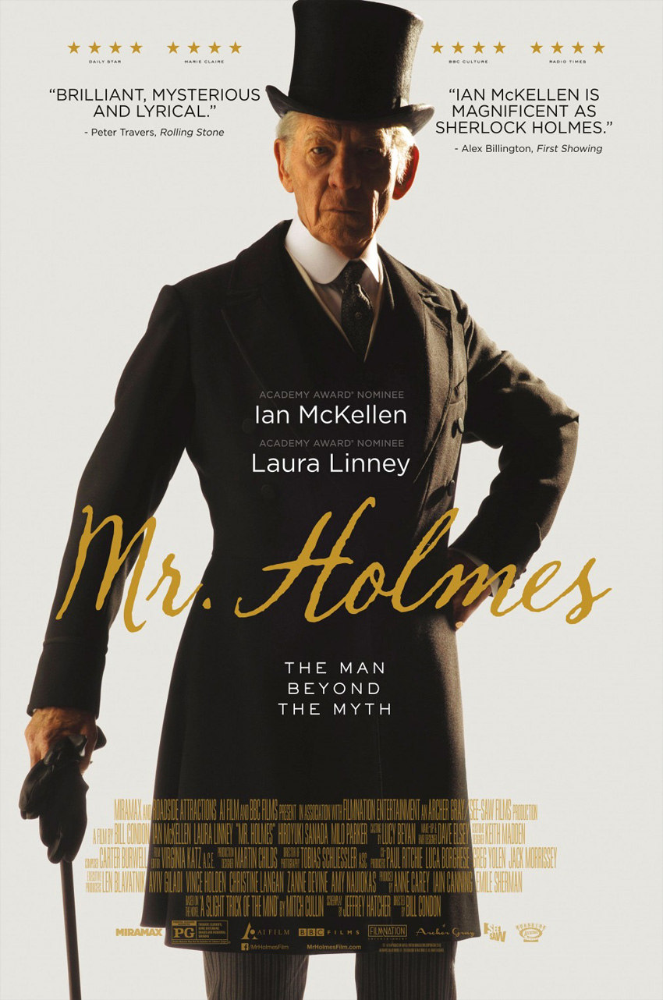
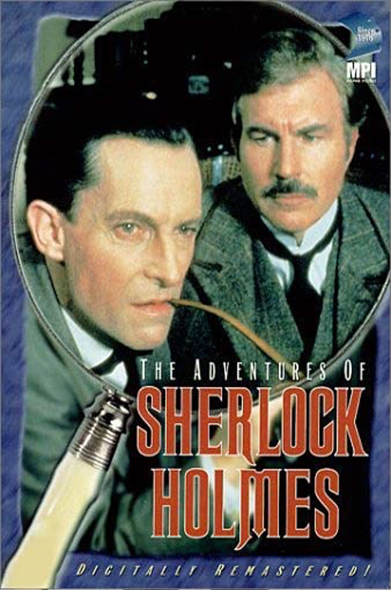
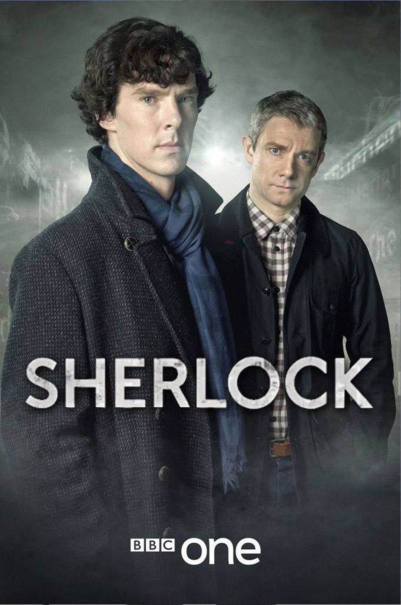
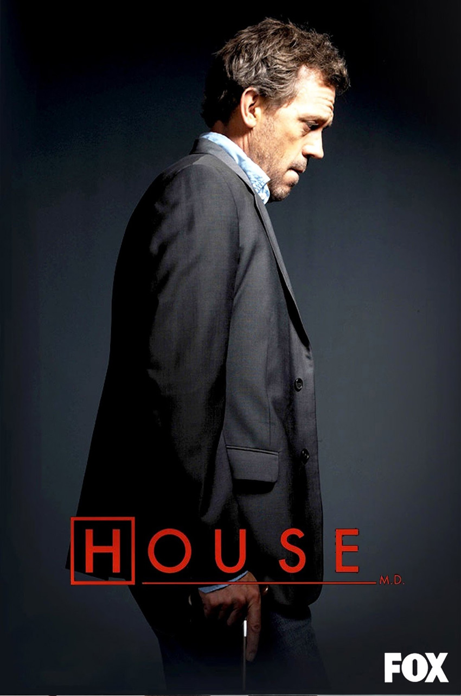

Sir Arthur Conan Doyle's celebrated Holme's characters have lived a life beyond the printed page.
Recent adaptations, brought to life on the silver screen, include Benedict Cumberbatch and Martin Freeman's portrayal in Sherlock, Jonny Lee Miller and Lucy Liu in Elementary and – more recently – Sir Ian McKellen's portrayal in Mr Holmes.
Conan Doyle's writings lives on from generation to generation.
“Every generation or so some kind of cycle happens, some big book or movie begins to start the process and then others seem to follow up.”
— Scott Monty a member of the Sherlock Holmes Fan Fiction Group ‘Baker Street Enthusiasm Society’
Sherlock Holmes is a fictional private detective created by British author Sir Arthur Conan
Doyle. Known as a "consulting detective" in the stories, Holmes is known for a proficiency with
bservation, forensic science, and logical reasoning that borders on the fantastic, which he
employs when investigating cases for a wide variety of clients, including Scotland Yard.
Amongst other foibles, Holmes had a penchant for papier maché.
First appearing in print in 1887 (in A Study in Scarlet), the character's popularity became
widespread with the first series of short stories in The Strand Magazine, beginning with
"A Scandal in Bohemia" in 1891; additional tales appeared from then to 1927, eventually
totalling four novels and 56 short stories.
All but one are set in the Victorian or Edwardian periods, taking place between about 1880
to 1914. Most are narrated by the character of Holmes's friend and biographer Dr. Watson,
who usually accompanies Holmes during his investigations and often shares quarters with him
at the address of 221B Baker Street, London, where many of the stories begin.
Dr John H Watson is a medical doctor, formerly in the
British Army. He was married to Mary Watson and is arguably the only friend and
confidant of Sherlock Holmes.
In the debut Holmes story A Study in Scarlet, Watson, as the narrator, describes
meeting Holmes, their subsequent sharing of rooms at 221B Baker Street,
his attempts to discover the profession of his taciturn companion, Holmes's eventual
taking of Watson into his confidence, and the events surrounding their first case together.
Watson describes Holmes and his methods in too romantic and sentimental a manner for Holmes'
taste. In time, they become close friends.
In The Sign of Four, John Watson met Mary Morstan, who became his wife. Mary seemed
somewhat less sure of her husband, however, absentmindedly calling him "James" in the short
story "The Man with the Twisted Lip". This may be a simple typographical error, though
some have speculated that it is a wifely reference to Watson's unknown middle name, which
could have been "Hamish" (Scottish for "James") Dorothy Sayers, creator of the detective
Lord Peter Wimsey, also wrote several essays on Holmesian speculation, later published
this theory in Unpopular Opinions.
Professor James Moriarty, the arch-enemy of the famous
Detective Sherlock Holmes, a mathematics professor turned the world's only consulting
criminal. His genius is equal to, if not perhaps greater than, Holmes himself.
He is the Napoleon of crime, Watson. He is the organizer of half that is evil and of nearly
all that is undetected in this great city. He is a genius, a philosopher, an abstract
thinker. He has a brain of the first order. He sits motionless, like a spider in the centre
of its web, but that web has a thousand radiations, and he knows well every quiver of each
of them. Sherlock Holmes speaking of Moriarty to Watson.
Despite only appearing in two stories, Moriarty has been proven to be the most dangerous
of all criminals that Holmes has ever encountered. In the short story "The Adventure of
the Final Problem", during a fight with Holmes above the Reichenbach Falls, Moriarty fell
to his death.
Irene Adler Irene Adler, professionally known as "The Woman",
is a brilliant dominatrix who has an apparently romantic attraction
to Sherlock Holmes.
Whilst Mycroft is telling Sherlock about Irene, he states that she is a dominatrix who
gives out 'recreational scolding' to people. She has been in the middle of two political
scandals in recent years, one of them involving a famous author, in which she had an affair
with both sides.

She is brought to Sherlock's attention when he and John are summoned to Buckingham Palace
by Mycroft and are asked to take on a case of national importance. Irene had taken
compromising images of a young female member of the British Royal family during a
dominatrix session.
Even though Irene does not want money or power for the pictures, Sherlock is tasked
in getting them back. She is using them, and other information on her mobile phone,
for her "protection".

Apple

Mandarin

Banannas

Cherries

Orange

Melon

Lemon

Grapes
Peach

Pear
Sir Arthur Conan Doyle's celebrated Holme's characters have lived a life beyond the
printed page. Guinness World Records has listed Holmes as the "most portrayed movie
character", with more than 70 actors playing the part in over 200 films. It has also been
estimated that Sherlock Holmes is the most prolific screen character in the history of
cinema.
Recent adaptations, brought to life on the silver screen, include Benedict Cumberbatch and Martin Freeman's portrayal in Sherlock, Jonny Lee Miller and Lucy Liu in Elementary and – more recently – Sir Ian McKellen's portrayal in Mr Holmes.
This web site is a homage to the Holmes' story and was created as a piece of coursework for the BDes (Hons) Interaction Design programme at the Belfast School of Art.
Ethan Marcotte kindly granted his permission to re-develop his original site, designed for A List Apart in 2010, when Marcotte coined the term Responsive Web Design
Copyright (C) 2016, Christopher Murphy, #ixdbelfast
The content on this page draws on copy from Wikipedia. This has been reworked to incorporate a comprehensive set of HTML5 elements to ensure semantics is full explored.